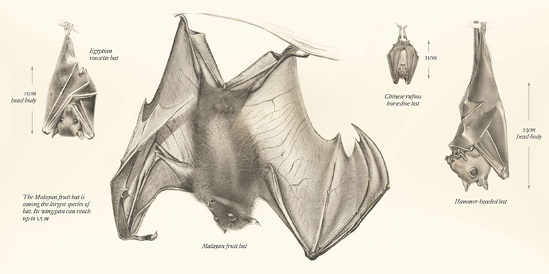
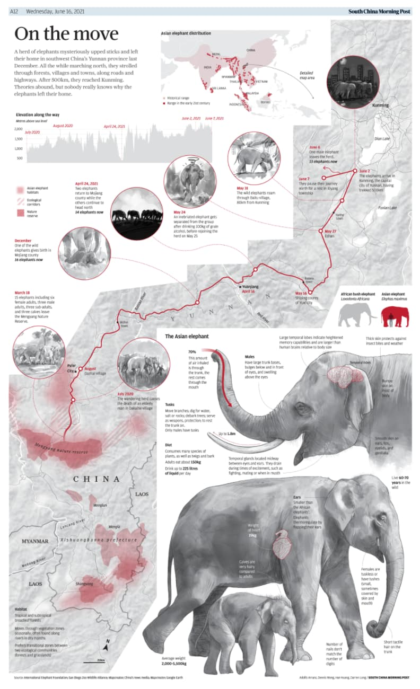
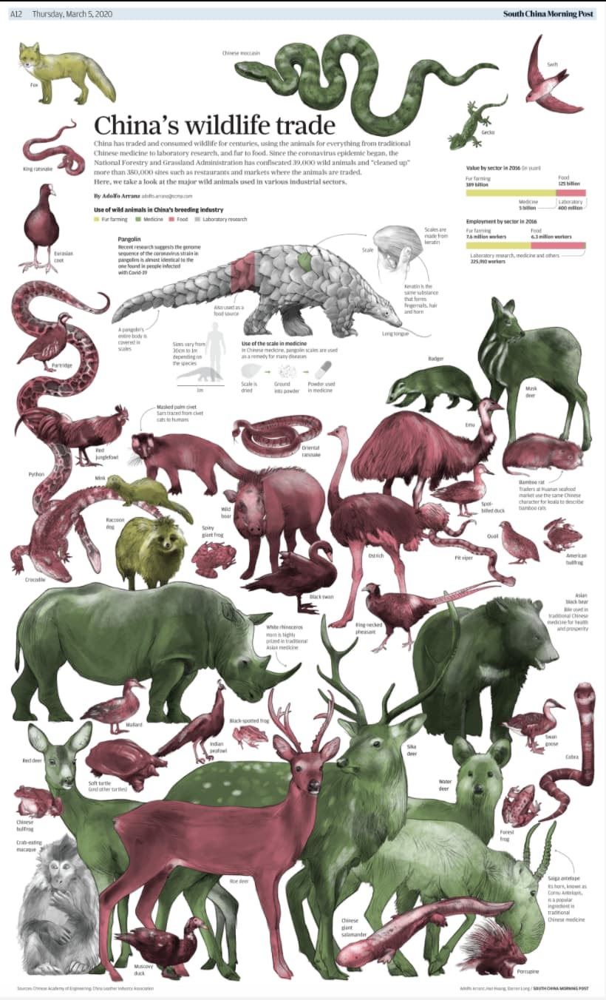
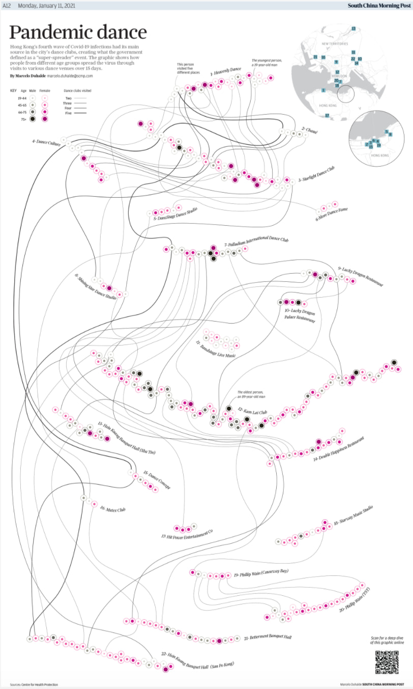
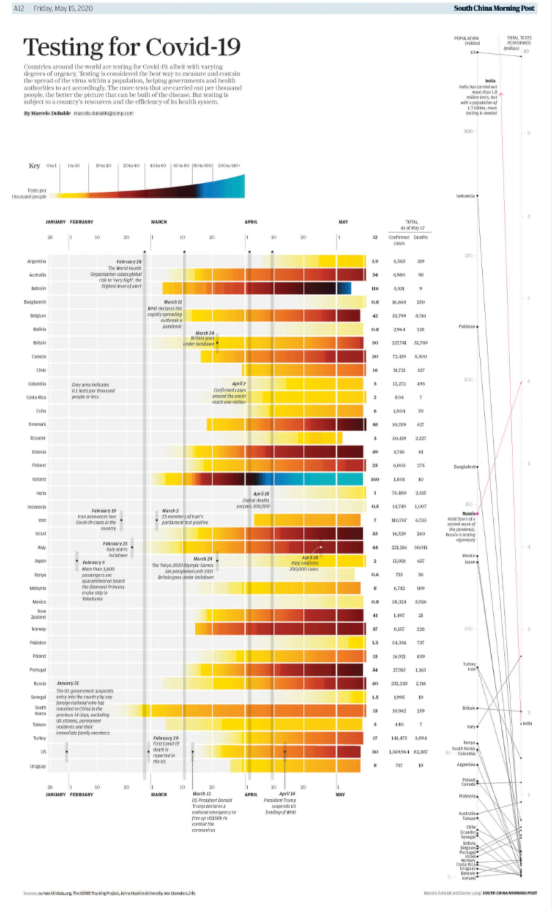
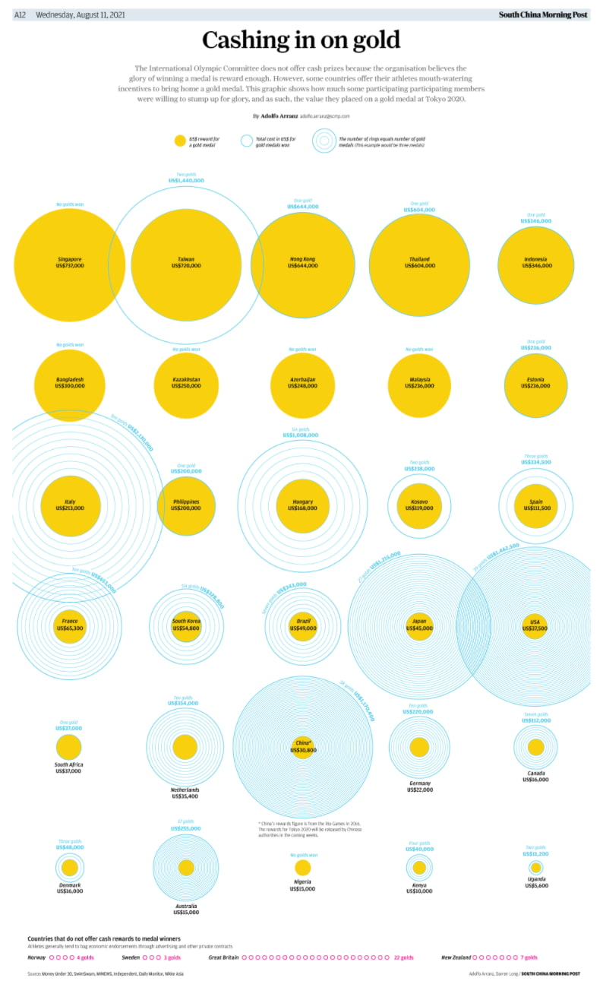

Información en gráficos figurativos

BATS and the ORIGIN of OUTBREAKS
Publicado en Reuters Graphics.

On the Move
Publicado en South China Morning Post.

China's Wildlife Trade
Publicado en South China Morning Post.

Tradition or Exploitation?
Publicado en South China Morning Post.
Información en gráficos no figurativos

BATS and the ORIGIN of OUTBREAKS
Publicado en Reuters Graphics.

Pandemic Dance
Publicado en South China Morning Post.

Testing for Covid
Publicado en South China Morning Post.

Cashing in on Gold
Publicado en South China Morning Post.